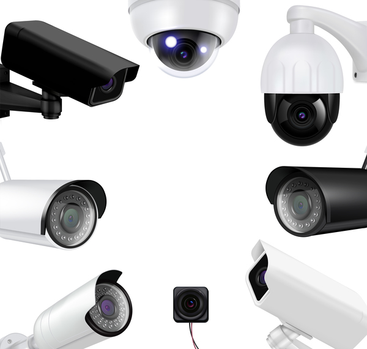

Cftv
Circuito Fechado ou Circuito Interno de Televisão, é um sistema de televisão que distribui sinais provindas de câmeras localizadas estrategicamente em pontos onde é possível uma ou mais visualizações. A principal razão do uso de CFTV é para segurança e monitoramento interno.
Saiba mais
